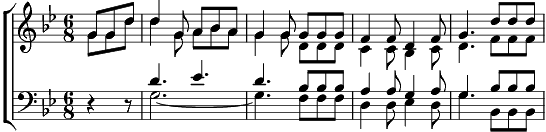

1. Ah !…
Sur Bethléem en Orient,
Lorsque soudain paraît l'Etoile,
Bel astre d'or au firmament.
Noël ! Noël ! Jésus descend du ciel !
2. Ah !…
Sur un berceau va se poser :
C'est l'enfant Dieu près de sa mère,
Venu du ciel pour nous sauver.
Noël ! Noël ! Jésus descend du ciel !
3. Ah !…
Jésus, l'étoile de bonté
Car Lui seul peut mettre en mon âme
Tant d'Idéal et de clarté.
Noël ! Noël ! Jésus descend du ciel !